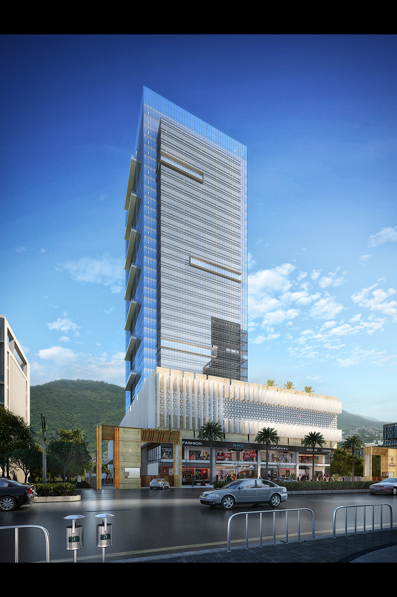
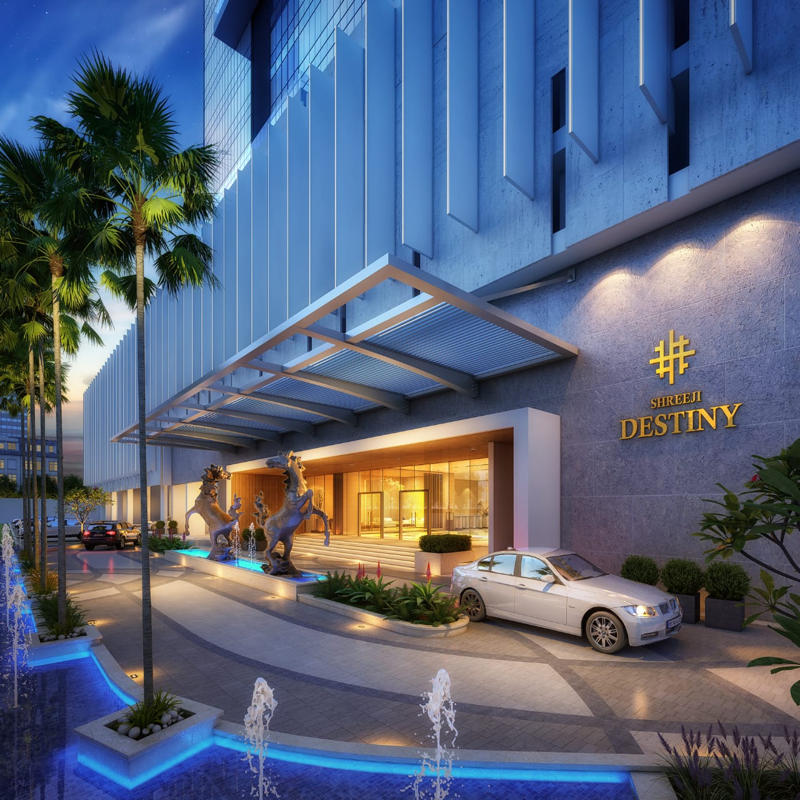
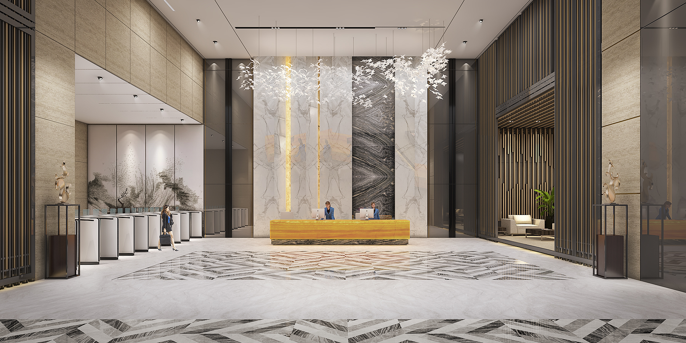
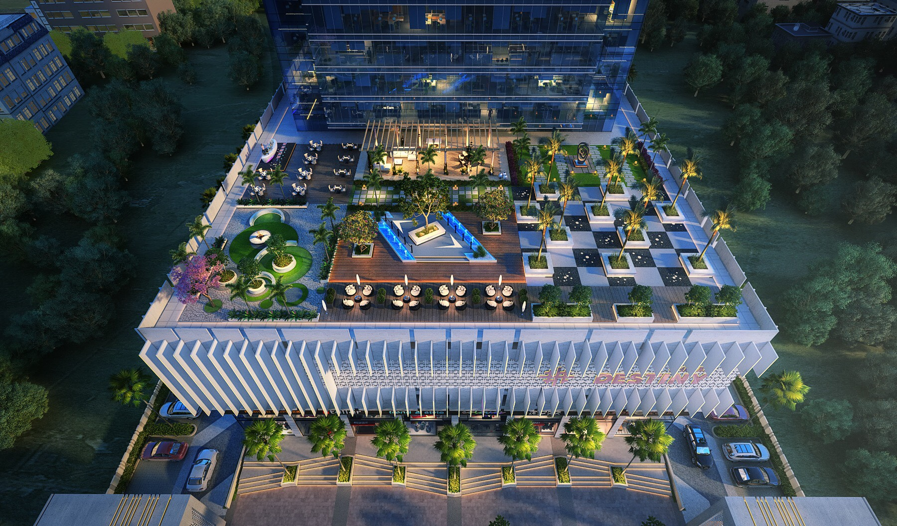

ABOUT US
Think Big, Act Fast and Invent Continuously, Devji Patel founder of the company started his career in 1994 with small construction work in Kutch, Gujarat. After that he was associated in land procurement & land development for few years, where he was involved in plotting, land dealing for commercial and residential properties. He has also worked for state government of Gujarat and Haryana Police Housing Corporation and also completed many projects including development of Hospitals, School, Villages, Townships, and bungalow Schemes at Manfara and Rehabilitation Work. His brilliance & knack for achievement has won him many projects for state government of Gujarat and Gujarat State Road Transport Corporation, Commercial Complex, and construction for 500 Shops at Rapar. At the time of crisis in Gujarat in the year 2005, he has planned and constructed 1000 Houses, Schools, Colleges,Roads and Dams and contributed to his responsibility towards society.
In the year 2005, he has moved to Mumbai to explore more opportunities in the real estate industry, and in the association of Akshar Developers completed some state-of-the-art commercial and residential properties. Sai Radiance at CBD Belapur (Sec15, 140 Flats), The Springs at Roadpali (324 Flats), The Springs 2 at Roadpali, an exclusive 2 BHK Project (72 Flats), Platinum Springs, an Industrial cum Commercial Galas project spread across 7 acres of land at Taloja (183 High tech Galas), Silver Springs, a Multiuser Industrial Galas project spread across 6 acres (252 Industrial Galas) and Ratna Enclave, a 1 BHK Exclusive project at Roadpali (Completed Project) are some of the stars in the hat of Mr. Patel. Till date, 2 million square feet of residential, IT, Commercial and Industrial projects completed with occupancy.
At Platinum Properties, the management consists of visionaries who apart from being in Construction, Retail Industry for the last 15 years have created ventures which have been a successful business model whose value have been appreciated multi fold in coming years. Our Residential cum Commercial Project at Roadpali stands as testimony and Landmark. The Springs consists of 9 towers of 18 storey 324 flats have been an exemplar of luxury and Lifestyle. After a successful launch of The Springs, Platinum properties have come up with Springs-ll Residential Towers of 18 floors consisting of exclusive 72 flats of 2BHK At Kharghar – Taloja Road, Roadpali, Navi Mumbai. Platinum Properties have constantly strived for contributing towards creating value for user who aspired to upgrade their lifestyle or business venture.
Silver Springs, a Multiuser Industrial cum Commercial Project @ Taloja MIDC. Theproject is spread across 6 acres of land consist of G+6 storey having 252+ Industrial units with area ranging from 200 – 2500 square feet, which is best suitable for Warehousing facilities, Industrial Spaces, commercial organization and corporates with high class business amenities and excellent operating space.
It was not a stop for Devji Patel, he has followed his thinking and in year 2015 he established construction company called “Techno Pack Software Services Private Limited”. It was his desire to achieve something incredible with hard work and patience that led him on the path of success. In the short span of time, he has earned a great reputation among the real estate fraternity.
We have a broad portfolio of successfully completed projects across a range of sectors including Residential, Commercial, Industrial. We have built our reputation on our client focus and hands-on approach. We are proud of the fact that the majority of our workload comes from repeat business and that we have a strong reputation for our competitive edge and reliable execution of all projects undertaken. This is achieved through our relentless attention to detail and an experienced team with the drive and customer focus to ensure client satisfaction is a given on all Destiny projects.
We continue to invest in modern business practices and management techniques in order to ensure that were main at the cutting edge of our industry. We continue to build on our reputation with our focus firmly on growing the ability of the business to deliver in new and innovative ways.
Our ambition and goals for almost a century have always been to deliver quality projects and value for money to our clients; our success and reputation today have been testament to this wisdom.
ENVIRONMENTAL MANAGEMENT
At Techno Pack we contribute to our environments and develop structures which may last centuries. With this in mind, we are future centric in terms of the design and technology we apply. We recognise the importance of utilising the most modern and most sustainable materials within the construction process. We are proudto have built quite a number of iconic projects which have broken new grounds in terms ofsustainable materials and innovative construction techniques. Bennett continuously strives to perform to sustainable best practice in construction in our mission to lesson our impact on our environment, and every new project for us is a challenge in search of a zero carbon footprint.
The area of the provision of more and more sustainable and renewable buildings is constantly evolving and changing and we are operating in a very exciting and dynamic times. Bennett continue to innovate with every project every day, and rigorouslyapply our Environmental Management Systems to achievethis.
We continue to lead the way in terms of our approachtosustainability. We source our materials responsibly, we audit our supply chain to ensure compliance with our systems and procedures whilst continuously checking our chain of custody certification etc. This investmentin suppliers and materials selection allow us to give the required high performance in use that specifications demand but with a reduced environmental footprint
QUALITY MANAGEMENT
Quality is of paramount importance to all team members at Techno Pack Software Services Pvt. Ltd. We are continually evaluating and improving the level of service we offer our clients toensurethereputationforqualityonwhichwepride ourselves is maintained and grown. We are committed to providing projects that are not just fit- for-purpose, but which exceed expectation in terms of quality of build and functionality. Ourreputation for both the quality of our project management and finished projects is achieved through our proven Quality Management System.
Our Quality system is an integral part of our company’s management activity. Our Quality Management System follows six basic Principles of Quality:
- Provides for long-term quality control through established processes and systems.
- Nurtures and guides our Quality Culture through its proven policies and procedures.
- Successfully identifies and controls the quality standard and quality of design as defined by our clients.
- Plans for Quality: Identifying measures of achieving the required quality, including construction methods, equipment, materials and personnel.
- Insures for Quality: Encouraging all parties to “Work Together to Deliver the Best – First Time”.
- Provides for a process of continuous improvement correcting any potential quality deficiencies that mayarise.
Our management structure and the responsibility of all our employees is explained in detail in our Management Manual. Our Quality system is an integral part of our existing management process which sets the high standards of co-operation required by all members of staff to ensure that the quality of service we provide to our clients is second to none.
The purpose of such a Quality system is to “get it right first time every time”. Our Directors and staff are committed to driving this process actively to give our clients the satisfaction of knowing that we will deliver exactly what we promise.
HEALTH AND SAFETY MANAGEMENT
Our Board of Directors and staff are totally committed to the implementation and continuous improvement ofthe Integrated Management Systems governing our Health, Safety, Environmental and Quality Codes of Practice. These systems are living documents that are continually reviewed and improved in line with industry best practice.
First and foremost the guarantee of the health and safety of our employees and of all those effected by our construction operations is an absolute pre-requisite to conducting anywork at anytime. Wehave developed our systems and procedures over many years based on these ethics. As a result of this approach and investment,we have won many awards and are ranked among the top performers in the Irish construction industry in terms ofthe management of Health and Safety at Work.
CURRENTLY WORKING PROJECTS PHOTOS



CONTACT DETAILS
Site/Office Address.: Plot No D-227, TTC Industrial Area, Thane - Belapur Rd, Shiravane, Nerul, Navi Mumbai, Maharashtra 400706.
Contact Nos.: +91 9920315100 / +91 9769725666 /+91 9320174151